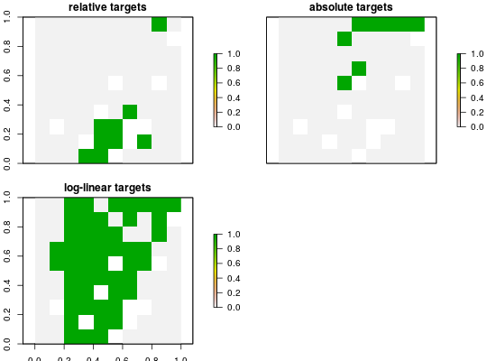

Set targets as a proportion (between 0 and 1) and calculated using a log-linear equation and four tuning parameters (as used in Rodrigues et al. 2004). The first tuning parameter specifies the first cut-off range size, and the second specifies the second cut-off range size, the third argument specifies the target required for species with a range size equal to or less than the first cut-off range size, and the fourth argument specifies the target required for species with a range size equal to or greater than the required range size.
add_loglinear_targets(x, lower_bound_amount, lower_bound_target, upper_bound_amount, upper_bound_target)
| x |
|
|---|---|
| lower_bound_amount |
|
| lower_bound_target |
|
| upper_bound_amount |
|
| upper_bound_target |
|
| ... | not used. |
ConservationProblem-class object with the target added
to it.
Note that with the exception of the maximum cover problem, targets must
be added to a problem or solving will return an error.
Targets are used to specify the minimum amount or proportion of a feature's
distribution that needs to be protected. All conservation planning problems
require adding targets with the exception of the maximum cover problem
(see add_max_cover_objective), which maximizes all features
in the solution and therefore does not require targets.
Rodrigues ASL, Akcakaya HR, Andelman SJ, Bakarr MI, Boitani L, Brooks TM, Chanson JS, Fishpool LDC, da Fonseca GAB, Gaston KJ, and others (2004) Global gap analysis: priority regions for expanding the global protected-area network. BioScience, 54: 1092--1100.
# load data data(sim_pu_raster, sim_features) # create problem using loglinear targets p <- problem(sim_pu_raster, sim_features) %>% add_min_set_objective() %>% add_loglinear_targets(10, 0.9, 100, 0.2) %>% add_binary_decisions() # solve problem s <- solve(p)#> Optimize a model with 5 rows, 90 columns and 450 nonzeros #> Variable types: 0 continuous, 90 integer (90 binary) #> Coefficient statistics: #> Matrix range [2e-01, 9e-01] #> Objective range [2e+02, 2e+02] #> Bounds range [1e+00, 1e+00] #> RHS range [2e+01, 2e+01] #> Found heuristic solution: objective 11313.9 #> Presolve removed 4 rows and 0 columns #> Presolve time: 0.01s #> Presolved: 1 rows, 90 columns, 90 nonzeros #> Variable types: 0 continuous, 90 integer (90 binary) #> Presolved: 1 rows, 90 columns, 90 nonzeros #> #> #> Root relaxation: objective 9.976387e+03, 1 iterations, 0.00 seconds #> #> Nodes | Current Node | Objective Bounds | Work #> Expl Unexpl | Obj Depth IntInf | Incumbent BestBd Gap | It/Node Time #> #> 0 0 9976.38729 0 1 11313.8582 9976.38729 11.8% - 0s #> H 0 0 10122.464537 9976.38729 1.44% - 0s #> #> Explored 1 nodes (1 simplex iterations) in 0.01 seconds #> Thread count was 1 (of 4 available processors) #> #> Solution count 2: 10122.5 11313.9 #> #> Optimal solution found (tolerance 1.00e-01) #> Best objective 1.012246453733e+04, best bound 9.976387293336e+03, gap 1.4431%# plot solution plot(s, main = "solution", axes = FALSE, box = FALSE)